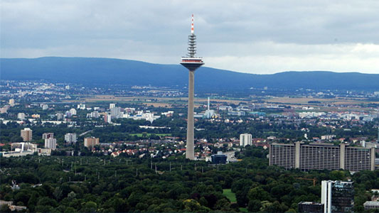

Frankfurt
Si bien Frankfurt viene siendo el centro financiero de Alemania, a la vez que concentra grandes capitales e inversiones en cuanto al transporte, no hay que dejar de lado el aspecto turístico y aprovechar el tiempo para explorar la ciudad y disfrutar de gratificantes experiencias, como interesantes museos, reconocidas galerías comerciales, óperas de clase mundial y algunos barrios con encanto como Nordend y Bockenheim.

Miluska: La mejor época para viajar a Frankfurt y disfrutar de las vacaciones es el verano, cuando el tiempo es soleado y cálido, con ocasionales días húmedos. Antes de viajar, primero debes revisar el calendario de fiestas y eventos y tal vez evitar que tu estancia coincida con una de las muchas ferias internacionales de comercio y grandes exposiciones que se celebran en la ciudad, porque esto hace que los hoteles y restaurantes sean difíciles de encontrar.
El Metro de Frankfurt (U-Bahn), junto con el S-Bahn y los tranvías, es uno de los medios de transporte más utilizados en la ciudad, se encuentra gestionado por la empresa Verkehrsgesellschaft Frankfurt (Compañía de Transporte de Frankfurt).
Museos en Frankfurt: Museumsufer (Ribera de los Museos): es una destacada zona turística, artística y cultural de la ciudad de Frankfurt, pues en ella, se pueden encontrar diversos e interesantes museos. Esta área fue concebida en los años 80, para lo que muchas casas y edificaciones históricas fueron reestructuradas pero manteniendo su arquitectura inicial.
Monumentos en Frankfurt: Europaturm, o Torre de Europa, en alemán, es una importante torre de telecomunicaciones ubicada en la ciudad de Frankfurt del Meno, es a menudo llamada coloquialmente Ginnemer Spaschel o Espárrago de Ginnheim por los lugareños, cuenta con una altura total de 337,5 metros, asi similar a la Torre Eiffel en París.
Plazas en Frankfurt: La celebración de la primera feria oficial de productos se llevó a cabo en el año 1240 en Römerberg, que constituye una de las principales plazas y considerada el centro de la ciudad vieja. A sus lados pueden observarse diversas viviendas construidas en madera (Fachwerkhäuser), y que fueran refaccionadas luego de su destrucción durante la guerra; además de la vieja Iglesia Nikolaikirche (Iglesia de San Nicolás).
Iglesias en Frankfurt: En los años 50, la Catedral de San Bartolomé (en alemán Sankt Bartholomäusdom) era el más alto de la ciudad de Frankfurt, con más de 96 metros de altura, habiendo tenido lugar en el mismo, entre los años 1562 y 1792 la coronación de varios emperadores alemanes, lo que dio origen a su nombre: Kaiserdom (Catedral del Imperio).